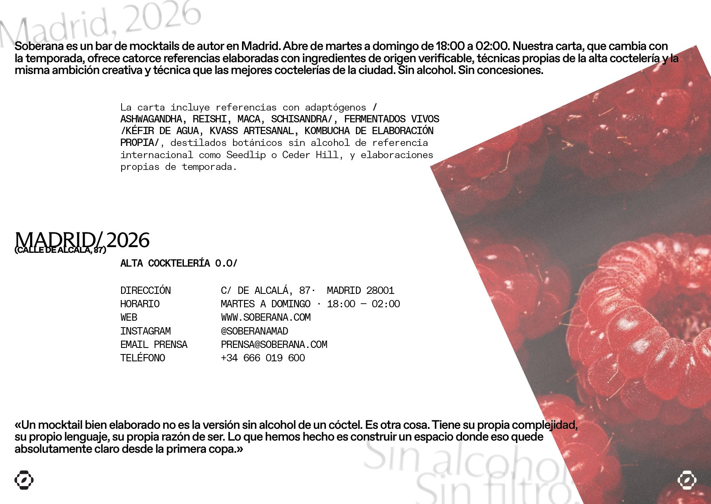
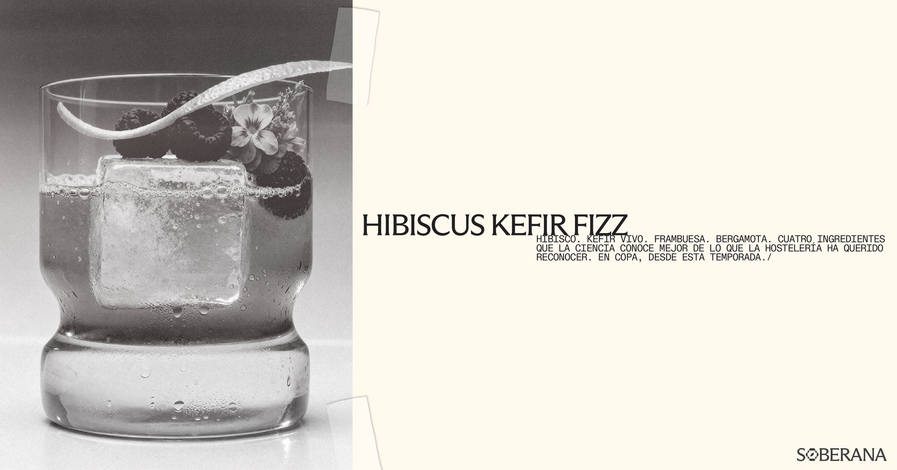
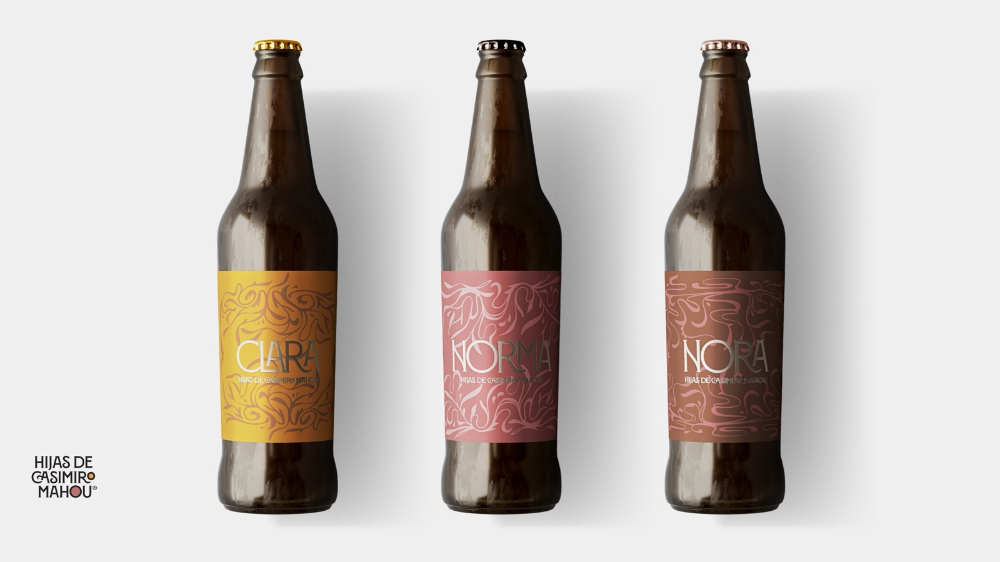

(06) Archivo
Proyectos
-
(001)
Soberana Madrid
2026 / Branding 360, Print.
Branding · Identidad Visual · Diseño de Impresión · Diseño Web · Estrategia de Comunicación
Territorio mercado: España.
Público target: Generación Z, millenials, wellness enthusiasts.Soberana nace para redefinir la experiencia de consumo sin alcohol, situándola en el centro de la propuesta. El proyecto abarca la construcción estratégica de la marca y el desarrollo de una identidad visual capaz de reflejar su carácter distintivo, contemporáneo y analógico a través de todos sus soportes y aplicaciones.
Propósito/
Impulsado por un cambio en los hábitos de consumo, el mercado de las bebidas sin alcohol continúa creciendo, mientras la hostelería premium aún no ofrecía una propuesta capaz de liderar esta nueva categoría en Madrid. Soberana nace para responder a esta oportunidad mediante una identidad de marca estratégica que, además de redefinir la experiencia de la coctelería 0.0, promueve una visión más consciente del consumo de alcohol.
Outcome/
El proyecto comprende el desarrollo integral de la marca, desde la ideación del naming hasta la construcción de un sistema de identidad visual completo. El nombre, Soberana, establece un juego de doble lectura entre sober y soberanía, mientras que el isotipo nace de la combinación entre la sección transversal de un ingrediente botánico y el símbolo matemático del conjunto vacío, simbolizando la ausencia de alcohol y la presencia de lo orgánico.
Dirección de arte/
La identidad no se limita a representar la marca, la hace tangible. Para construir una categoría nueva era necesario alejarse de los códigos existentes y para ello la dirección de arte se apoyó en referentes editoriales, científicos y del universo de la cosmética para desarrollar un lenguaje visual donde la simplicidad, la precisión y la materialidad sustituyeran a los recursos tradicionalmente asociados a la coctelería.
Activación marca/
Estrategia de comunicación que parte del insight central del proyecto “Nadie te pregunta por qué bebes. Solo te preguntan por qué no” y lo convierte en piezas de comunicación donde se construye una serie de carteles tipográficos con las preguntas que el público objetivo reconoce en primera persona. El consumidor que la lee no recibe un mensaje publicitario, sino el reconocimiento de algo que le ha ocurrido en algún punto. Ese reconocimiento es el vínculo emocional que la marca trata de construir.




-
(002)
Passage Burberry
2026 / Packaging, Concepción.
Identidad Visual · Diseño de Impresión · Packaging · ConceptualizaciónPassage explora una posible extensión de Burberry hacia el universo del café de especialidad. Inspirado en la tradición viajera de la marca, el proyecto desarrolla una colección de seis orígenes y un sistema visual que transforma cada envase en una parada de un itinerario editorial y coleccionable.
Propósito/
El reto consistía en extender Burberry hacia una categoría ajena a su ADN sin perder autenticidad. Lejos de apoyarse en una herencia cafetera inexistente, el proyecto parte del legado viajero de la marca (la gabardina nació como una prenda concebida para el movimiento) para convertir el café en un compañero de viaje y una nueva expresión de su universo.
Valor para la marca/
Passage abre a Burberry una vía de brand extension creíble pues no compite en la categoría café sino que crea una narrativa propia dentro de ella. Traduce el patrimonio expedicionario de la marca en una experiencia de producto coleccionable y ritual, reforzando su posicionamiento como autoridad del viaje, no del producto.
Dirección de arte/
El lenguaje visual se construye a partir de un sistema editorial donde la tipografía vertical de gran formato define la colección. Cada origen se identifica mediante un degradado cromático propio, mientras que el Equestrian Knight y el azul Klein aportan continuidad y reconocimiento a través de detalles inspirados en el Nova Check, el sistema tipográfico y el isotipo.


-
(003)
Editorial Specimen
2025 / Editorial, Creative Direction.
Editorial · Diseño de Impresión · Dirección Creativa · Experimentación · Team Work
ADG Laus Awards / InBook 2026.Specimen convierte cada objeto en una pieza de estudio. Una publicación que documenta, interpreta y recontextualiza aquello que forma parte de nuestra vida diaria para revelar el diseño que siempre estuvo ahí.
Propósito/
Propuesta de colección editorial dedicada a la exploración y reinterpretación de objetos cotidianos. Cada volumen disecciona un único objeto ordinario desde su ficha técnica y evolución histórica hasta contribuciones artísticas que lo reimaginan, reivindicando la complejidad de lo que pasa desapercibido.
Valor añadido/
Specimen funciona como plataforma de visibilidad para artistas y diseñadores, al tiempo que hace la cultura del diseño accesible a un público amplio. Cada número transforma el rol convencional de la publicación integrando el objeto protagonista como parte del propio artefacto editorial.
Dirección creativa/
Inspirado en el término científico specimen, el proyecto adopta la observación y el análisis como estructura editorial. Dos tipos de papel distinguen las distintas capas de contenido y sin un grid estrictamente definido, el diseño editorial juega sobre unas bases flexibles que se reconfiguran en función del contenido. No hay un layout rígido, sino un campo de exploración y juego.


-
(004)
Bodega Borne
2026 / Identidad, Packaging.
Identidad Visual · Diseño de Impresión · Packaging · Conceptualización
Territorio mercado: España e internacional. Vino de autor.
Público target: Perfil alto. Curioso. Exigente. Con criterio.Borne es un proyecto de branding y packaging vinícola que aborda el diseño de identidad completa para una bodega ficticia bajo la Denominación de Origen Toro, Zamora. El proyecto comprende desde la construcción del naming y la dirección conceptual hasta el desarrollo del sistema gráfico aplicado a packaging de tres referencias de producto.
Propósito/
Desarrollar una marca de bodega bajo la Denominación de Origen Toro y una línea de producto declinada en tres variedades, con posicionamiento premium y un sistema de identidad visual coherente y diferenciador dentro de un mercado dominado por códigos taurinos y estéticas oscuras convencionales. La propuesta se construye en torno a las cepas prefiloxéricas centenarias de la región, un patrimonio vitícola excepcional que da origen a Postrero, una colección de tres vinos diferenciados por la edad de la cepa (50, 80 y más de 100 años), donde el valor reside en la rareza de su origen.
Concepción/
Todo el proyecto gira en torno a dos conceptos, el lugar y el tiempo. Borne habla del territorio mientras que Postrero, del último tramo de vida de una cepa. Entre ambos se construye el significado de la marca.
Dirección gráfica/
La identidad se construye a partir de una figura geométrica inspirada en un reloj de arena. El color y los acabados surgen directamente del concepto, donde cada variedad expresa visualmente el paso del tiempo. La secuencia de metales, bronce, plata y oro, establece una jerarquía temporal, mientras que los colores planos traducen los perfiles aromáticos de cada vino.
Valor añadido/
La marca redefine a su manera el concepto de lujo al situar la edad de la cepa como principal criterio de rareza. La solución gráfica es un código cromático derivado de datos enológicos reales que convierte información técnica en lenguaje visual, eliminando la necesidad de jerarquías tipográficas o recursos gráficos adicionales. El color hace todo el trabajo. Esa economía de medios, lejos de empobrecer el sistema, es lo que le da fuerza y escalabilidad.


-
(005)
Velzia Group
2026 / Editorial, Print.
Editorial · Diseño de Impresión · Dirección Artística · Redes SocialesGestión del diseño Editorial en Velzia Group, marca de referencia en reforma e interiorismo premium en Madrid. Mi trabajo se centra en trasladar el estándar de calidad de sus obras al plano gráfico, con herramientas editoriales que acompañan la relación con el cliente y contenido visual para sus marcas, integrando asimismo IA generativa como herramienta de producción bajo una dirección de arte definida.
Función/
Trasladar el nivel de acabado de sus obras al plano gráfico, diseñando las herramientas editoriales que acompañan la relación con el cliente y el contenido visual de sus marcas. Asimismo, elaborar creatividades para la marca de mobiliario y decoración del grupo, diseñada en Madrid y con venta online, incluyendo la preparación de artes finales y archivos listos para producción e impresión.
Libro de estilos · Propósito/
Proyecto de diseño editorial y producción de un libro de estilos para interiorismo. La publicación desarrolla un sistema de maquetación consistente que organiza cinco estilos decorativos mediante criterios de composición, materiales, paleta cromática, iluminación y mobiliario, convirtiendo el contenido en una herramienta visual clara y funcional.
Libro de estilos · Valor añadido/
El resultado es una herramienta editorial que simplifica la toma de decisiones y amplía los activos de comunicación de la marca. Velzia incorpora así un catálogo de estilo premium, concebido para acompañar al cliente durante el proceso de diseño y reforzar la presentación de sus servicios. La producción mediante IA generativa permitió optimizar tiempos y costes sin comprometer la calidad visual.
Redes sociales · Propósito/
Construir una presencia visual reconocible en redes que traduzca el producto físico a un feed coherente y aspiracional, orientado a la conversión, decisivo cuando la venta es íntegramente digital y la primera impresión visual determina la compra. Creatividades generadas o extendidas con IA para contextualizar el mueble real en escenas de interiorismo, resueltas con retoque y composición en Photoshop, Illustrator y Canva.
Redes sociales · Valor añadido/
Aumento de la percepción de valor con una imagen sólida y profesional para una marca joven de e-commerce, y un flujo de producción que multiplica el volumen de contenido publicable con presupuesto mínimo, convirtiendo el canal social en su principal escaparate.


-
(006)
Otras piezas gráficas
Print Explorations · Types Explorations · Grid Explorations · Graphic ExplorationsUna selección de piezas sueltas: carteles, ilustración y pruebas de impresión, tipografía y retícula.
Incluye carteles para el Día Mundial de la Alimentación, la campaña 50 Pants. 50 Days para Egoísta, cartelería para Zsongo e ilustraciones para Four Seasons × Veuve Clicquot.




(06) Archive
Projects
-
(001)
Soberana Madrid
2026 / Branding 360, print.
Branding · Visual identity · Print design · Web design · Communication strategy
Market: Spain.
Target audience: Generation Z, millennials and wellness-conscious audiences.Soberana is a branding project for a premium mocktail bar that repositions non-alcoholic consumption as a destination rather than an alternative. The scope included brand strategy, naming, and the design of a visual identity that expresses the brand’s contemporary and analogue character through a coherent graphic system across all touchpoints.
Purpose/
Driven by changing consumer habits, the non-alcoholic beverage market continues to grow, while Madrid’s premium hospitality scene has yet to establish a brand capable of leading this emerging category. Soberana was developed to address this opportunity through a strategic brand identity that not only redefines the 0.0 cocktail experience but also promotes a more conscious approach to alcohol consumption.
Outcome/
The project encompasses the complete development of the brand, from naming and strategic positioning to the creation of a comprehensive visual identity system. The name, Soberana, plays on the dual meaning of sober and sovereignty, while the symbol combines the cross-section of a botanical ingredient with the mathematical symbol for the empty set, representing both the absence of alcohol and the presence of nature.
Art direction/
The identity does more than represent the brand, it gives it physical presence. Establishing a new category required moving beyond the visual conventions traditionally associated with cocktail culture. Drawing inspiration from editorial design, scientific publications, and cosmetic packaging, the art direction developed a visual language defined by simplicity, precision, and materiality.
Brand activation/
The communication strategy is built around the project’s central insight: “No one asks why you drink. They only ask why you don’t.” This idea is translated into a series of typographic campaign posters featuring questions the target audience instantly recognizes from their own experience. Rather than delivering an advertising message, the campaign reflects a familiar social reality, creating a moment of recognition that becomes the emotional connection between the audience and the brand.
Includes identity, social media, menu prototype and poster campaign.
-
(002)
Passage Burberry
2026 / Packaging, concept development.
Visual identity · Print design · Packaging · Concept developmentPassage explores a potential extension of Burberry into the specialty coffee category. Inspired by the brand’s heritage of travel and exploration, the project develops a collection of six single-origin coffees and a visual system that transforms each package into a stop along a collectible editorial journey.
Purpose/
The challenge was to extend Burberry into a category beyond its traditional domain without compromising the brand’s authenticity. Rather than relying on a non-existent coffee heritage, the project draws on Burberry’s legacy of travel and exploration, as its iconic trench coat was originally designed for movement, to position specialty coffee as a travelling companion and a natural extension of the brand’s universe.
Strategic value/
The project demonstrates how Burberry can extend into a new category without compromising its identity. By translating its expeditionary heritage into a ritualistic and collectible product experience, Passage creates strategic value beyond the product itself.
Art direction/
The visual language is built around an editorial system in which large-scale vertical typography defines the collection. Each single-origin coffee is distinguished by its own chromatic gradient, while the Equestrian Knight motif and Klein Blue provide consistency and recognition through details inspired by the Nova Check pattern, the typographic system, and the brand’s emblem.
Six origins: Stockholm, Addis Ababa, Napoli, Istanbul, Hanoi and Kyoto.
-
(003)
Editorial Specimen
2025 / Editorial, creative direction.
Editorial design · Print design · Creative direction · Creative exploration · Team work
Selected for ADG Laus Awards / InBook 2026.Specimen treats everyday objects as specimens for observation. Each volume combines documentation, analysis, and creative interpretation to uncover the design value hidden within the ordinary.
Purpose/
Editorial publication dedicated to the exploration and reinterpretation of everyday objects. Each volume examines a single ordinary object through technical documentation, historical context, and artistic reinterpretation, revealing the complexity of what often goes unnoticed.
Strategic value/
Specimen operates as both a publishing platform for artists and designers and an accessible introduction to design culture. Each issue challenges the conventional role of the publication by integrating the featured object into the editorial artefact itself, blurring the boundary between subject and medium.
Creative direction/
Inspired by the scientific notion of a specimen, the project adopts observation and analysis as its editorial framework. Two paper stocks distinguish the publication’s analytical and interpretative layers, while the layout is intentionally free from a rigid grid. Instead, the editorial system adapts to the content, creating a flexible space for exploration, experimentation, and visual play.
-
(004)
Bodega Borne
2026 / Visual identity, packaging.
Visual identity · Print design · Packaging · Concept development
Market: Spain. International.
Category: premium wine.
Target audience: high-end consumers, wine collectors; curious, discerning and quality-conscious audiences.Borne is a comprehensive branding and packaging project for a fictional winery under the Toro Designation of Origin. The scope included naming, brand strategy, conceptual development, and the design of a cohesive visual identity system applied to a collection of three wines.
Purpose/
Develop a premium winery brand within the Toro Designation of Origin, together with a three-wine collection supported by a distinctive and cohesive visual identity. Rather than relying on the region’s conventional visual codes, the project is rooted in one of Toro’s most exceptional assets: its century-old pre-phylloxera vines. This heritage gave rise to Postrero, a collection of three wines differentiated by vine age (50, 80 and 100+ years), where rarity is defined by origin rather than production.
Concept development/
The project is built around two fundamental ideas: place and time. Borne represents the territory, while Postrero refers to the final stage in the life of a vine. Together, they establish the conceptual foundations of the brand and define its narrative.
Art direction/
The identity is built around a geometric form inspired by an hourglass. Colour and material finishes emerge directly from the concept, allowing each wine to communicate the passage of time without relying on explanatory text. The bronze, silver, and gold sequence establishes a temporal hierarchy, while the solid colour palette translates the aromatic profile of each wine into a clear visual language.
Strategic value/
The project redefines luxury by positioning vine age as the measure of rarity. A colour system derived from real oenological data transforms technical information into a visual language, removing the need for typographic hierarchies or decorative graphic elements. Colour becomes the primary carrier of meaning, resulting in an identity system whose restraint is precisely what gives it clarity, strength, and scalability.
-
(005)
Velzia Group
2026 / Editorial, print.
Editorial design · Print design · Art direction · Communication & social mediaEditorial design and visual communication for Velzia Group, translating the brand’s premium positioning into printed and digital editorial assets. The work spans publication design, visual storytelling, and the implementation of generative AI workflows to enhance production while maintaining a consistent art direction.
Role/
Translate the craftsmanship and premium quality of Velzia’s renovation projects into editorial experiences, designing client-facing publications and visual communication across the group’s brands. The role also includes the development of creative assets for the group’s furniture and home décor brand, designed in Madrid and distributed through its online store, as well as the preparation of print-ready artwork and final production files.
Trend Book · Purpose/
Development of an editorial publication that organises and communicates five interior design styles through a consistent visual system. The guide combines editorial design, typography, hierarchy, and image direction to create a practical reference for both clients and the design team.
Trend Book · Strategic value/
The outcome is a premium editorial tool that streamlines decision-making while expanding Velzia’s brand assets. Designed to support clients throughout the design process, the guide strengthens the presentation of the studio’s services and provides a consistent framework for communicating its design approach. The integration of generative AI into the production workflow significantly reduced time and costs without compromising the publication’s visual quality.
Social media · Purpose/
Create a social media identity that extends the brand experience beyond the product itself. Through AI-assisted image creation, compositing, and digital retouching, real furniture is placed within aspirational interior settings, transforming individual products into a cohesive visual narrative optimised for online retail.
Social media · Strategic value/
The resulting content system strengthened the brand’s perceived quality while enabling a scalable production process. With social media acting as the brand’s main customer touchpoint, the project maximised content output and consistency without the need for costly photography or 3D rendering.
-
(006)
(Other) Graphic Pieces
Print explorations · Type explorations · Grid explorations · Graphic explorationsA selection of standalone pieces: posters, illustration, and print, type and grid explorations.
Includes posters for World Food Day, the 50 Pants. 50 Days campaign for Egoísta, posters for Zsongo, and illustrations for Four Seasons × Veuve Clicquot.